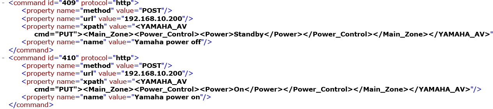

Until now i was looking information to send commands to my Yamaha receiver with no success.
Any of the members of the forums have the knowledge sending commands to the Yamaha over the network.
Note: I have the network stand by on and port 50000 like are supposed to be but nothing
Suggestions please.
Edito
{kind=link}
{kind=link}
|
I have it working great, what model do you have? It's a HTTP Post with XPath. Here is an example <?xml version="1.0" encoding="utf-8"?> <YAMAHA_AV cmd="GET"> <Zone_2> <Volume> <Lvl>GetParam</Lvl> </Volume> </Zone_2> </YAMAHA_AV> |
|
Hi Glenn. I'm happy for you. I have a rx-a830 Actually my problem is at communication level. (java.net.MalformedURLException: no protocol :192.168.10.200) but if i type the address in chrome the receiver can be ontrolled. In the controller.xml i have this  In designer As i can see you are getting the volume in you zone 2 I'll be trying to solve the java error and later review the syntax of the xpath. thanks. Edito |
|
Your URL is wrong it should be something like this http://192.168.0.12/YamahaRemoteControl/ctrl |
|
Glenn can you show me how look you URL and xpath lines for power on command? I can't meke it work. i'm considering take the infrared road. |
|
Here you go, do not just add this to your controller file you need to add it via the GUI. Your mistake is you are putting the XML in the XPath, you have to put it in the workload. You use the XPath for Get values eg getting the current volume <command id="1950" protocol="http"> <property name="workload" value="<?xml version="1.0" encoding="utf-8"?><YAMAHA_AV cmd="PUT"><Main_Zone><Power_Control><Power>On</Power></Power_Control></Main_Zone></YAMAHA_AV>" /> <property name="method" value="POST" /> <property name="url" value="http://192.168.1.46/YamahaRemoteControl/ctrl" /> <property name="name" value="(Office) Turn On" /> </command> |
|
Now are working the power on, off, volume up and down thanks to you. Later i'll do the rest. One more question, the range for the volume in the receiver is from -80 to +15 in the modeler the values for the sensor should be like in the Yamaha or 0-99? And Glenn Thanks. When i finish with the ip control of the yamaha the next step will be refine the user interface. That was one my reasons to choose openremote so thanks you for you help in this finals steps. Edito. |
|
Trust me if you think that was hard you won't get the volume working, the slider control seems broken to me when it comes to the Yamaha for some reason it can't handle negatives. I never found an easy way around it, I manually changed the panels.xml to be 0-99 but then kept the sensor - controller xml as -80 to 15
<sensor id="100137" name="Amp Volume" type="range">
<include type="command" ref="1948" />
<min value="-805" />
<max value="100" />
</sensor>
|
|
Here i am again. I can get the volume status from the Yamaha. the status command i created have the fallowing attributes: The sensor have the following properties The question is where is supposed to be pointed the slider Edito |
|
It needs to be linked to the Get volume command This is the last advise I am giving sorry, but you keep putting things in the wrong areas even after I have told you, that it is incorrect. You put the information in the workload not the Xpath field, see below Please look up other threads providing information on this. <command id="1948" protocol="http"> <property name="pollingInterval" value="2s" /> <property name="method" value="GET" /> <property name="url" value="<?xml version="1.0" encoding="utf-8"?><YAMAHA_AV cmd="GET"><Zone_2><Volume><Lvl>GetParam</Lvl></Volume></Zone_2></YAMAHA_AV>" /> <property name="xpath" value="/YAMAHA_AV[1]/Zone_2[1]/Volume[1]/Lvl[1]/Val" /> <property name="name" value="(Desk) Get Volume" /> </command> |
|
Thanks a lot. Is working now. Edito. |